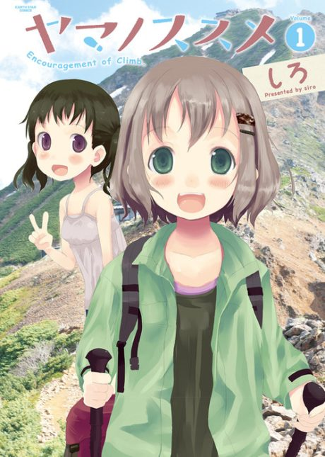

Anime
Anime
Manga2013 · Adventure, Comedy, Slice of Life
Encouragement of Climb
ヤマノススメ
AniList6.7
Animeter—
4 seasons61 ep
MangaCh. 125
Anime finished. Where does the manga pick up?
Start at Chapter125
The latest season, Next Summit, ends at chapter 124 (end of volume 15), so start at chapter 125. The manga is still ongoing; the mapping is community-verified.
1165189124ongoing
Season 1Season 2Season 3Next SummitStart reading here